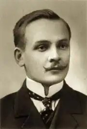
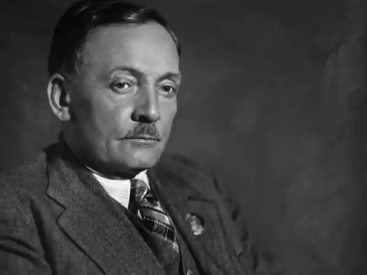

Янка Купала (справжнє ім'я Іван Домінікович Луцевич, біл. Іван Дамінікавіч Луцевіч; 1882-1942) — білоруський поет, драматург, публіцист.
Народився 25 червня (7 липня) 1882 року в селі В'язинка (нині Молодечненського району Мінської області Білорусі) в сім'ї Домініка Онуфрійовича Луцевич і Бенігно Іванівни Луцевич (дев. Волосевич).
Батьки були збіднілі білоруські шляхтичі, що орендували землі в поміщицьких угіддях. Рід Луцевич відомий з початку сімнадцятого століття. Дід поета орендував землю у Радзивіллів, але був ними вигнаний з рідних місць. Цей факт ліг в основу Купалівський драми "Раскіданае гняздо". У дитинстві майбутньому поетові доводилося багато допомагати батькові, який по суті, не дивлячись на своє шляхетське походження, належав до числа безземельних селян і змушений був обробляти знімні ділянки, сплачуючи великі суми в якості оренди за використання угідь. Після смерті батька в 1902 році працював домашнім учителем, писарем в поміщицькому маєтку, прикажчиком і на інших роботах. У виявленої в білоруському Національному історичному архіві анкеті призовника Луцевич Івана Домінікович вказані його віросповідання — римсько-католицьке і національність — росіянин. Пізніше Іван влаштувався чорноробом на місцевий гуральню, де продовжував трудитися в поті чола. Хоча важка робота забирала у молодої людини багато часу, йому вдавалося викроювати вільний час на заняття самоосвітою; таким чином, незабаром майбутній Янка Купала ознайомився практично з усіма книгами з боку батька або поміщицької бібліотек. У 1898 році закінчив народне училище в містечку Беларуч. У 1908-1909 роки жив у Вільні, де працював в редакції першої білоруської газети "Наша Ніва". Там же познайомився з майбутньою дружиною — Владиславою Станкевич — і актрисою Павлиною Мядзёлкой, якій Купала у свій час був сильно захоплений і на честь якої назвав героїню своєї першої п'єси — комедії "Паўлінка". У 1909-1913 роках початкуючий поет навчався в Санкт-Петербурзі на підготовчих загальноосвітніх курсах А.Черняева, потім в 1915 році провчився в Московському міському народному університеті, який був заснований на кошти відомого в Російській імперії золотопромисловця і мецената Альфонса Леоновича Шанявського і його дружини в 1908 році; університет знаходився в Москві і носив ім'я мецената. Янка Купала вступив в народний університет у вересні, проте його намірам продовжити навчання завадила загальна мобілізація, оголошена у зв'язку з настанням Першої світової війни. Уже в початку 1916 року поета-студента призвали в армію і той поступив в дорожньо-будівельний загін, у складі якого працював аж до настання подій Жовтневої революції. В цей час Янка Купала влаштувався в Смоленську, працював в сфері будівництва доріг, де його і застала зненацька революційна стихія. У період з 1916 по 1918 роки їм не було створено жодного твору, проте пізніше Янка Купала в своїй ліриці звернувся до теми виживання окремої особистості і народу в цілому в годину історичного перелому. Слід згадати такі програмні твори післявоєнних-революційного періоду, як "Час", "Для вітчизни", "Спадщина", "Своєму народу", які датуються 1919 роком. Після революції Янка Купала оселився в Мінську. Події радянсько-польської війни істотно не вплинули на образ життя поета: він пережив річну польську окупацію Мінська, в якому і залишився жити до наступної війни. Перші твори Купали — кілька ліричних віршів польською мовою, опубліковані в 1903-1904 роках в журналі "Ziarno" ( "Зерно") під псевдонімом "К-а". Перший вірш білоруською мовою — "Мая частка" (датується 15 липня 1904 року) в газеті "Північно-Західний край". Після цієї публікації Купала почав систематично з'являтися у пресі; вірш "мужик", опубліковане в цьому ж році, можна вважати його успішним літературним дебютом і початком сходження на літературний білоруський олімп. Його ранні вірші типові для фольклору в білоруській поезії XIX століття. З 1907 року Янка Купала розпочинає перше короткочасне співпрацю з газетою "Наша Ніва". У 1906-1907 роках написані поеми "Зімою" (Взимку), "Нікому" (Нікому), "Адплата Каха" (Оплата любов'ю), 18 грудня 1908 року "Наша Ніва" публікує поему "У Піліпаўку". У тому ж році закінчено роботу над поемами "Адвечная песьня" і "За што?". Тема цих творів — соціальна несправедливість і гніт поміщиків. Восени 1908 року Купала переїхав у Вільно, де продовжував роботу в редакції "Наша Ніви". У віленський період пишеться безліч відомих віршів: — "Малад Білорусь", "заклятими Кветко" (Заговорений / зачароване квітка), "Адцьвітаньне" та інші, "Наша Ніва" публікує їх у себе. У 1908 році в Петербурзі видано перший збірник Купали під назвою "Жалійка" ( "Сопілка"). В кінці року Санкт-Петербурзький комітет у справах друку при МВС вирішив конфіскувати збірник як антидержавний, а його автора — притягнути до відповідальності. Незабаром арешт був знятий, але в 1909 році тираж книги повторно конфіскований, вже за наказом Віленського генерал-губернатора. Щоб не зіпсувати репутацію "Нашої Ніви", Купала припинив роботу в редакції. Проте, петербурзький період його життя і творчості можна назвати одним з найуспішніших і продуктивних: в першу чергу тому, що Янке Купали довелося звести знайомства з багатьма представниками білоруської інтелігенції, наприклад, оформившимся як поет і здобув собі славу до початку 10-х років Якубом Коласом і Е.Пашкевіч, яка працювала під псевдонімом Тітка. Ще у Вільно поет познайомився з видатним діячем російського символізму В. Я. Брюсовим, який звернув увагу на активно публікується автора і виявив непідробний інтерес до його поетичної творчості. Пізніше Брюсов і Янка Купала продовжили тісно співпрацювати на літературних зборах в Петербурзі; Брюсов став першим російським автором, який почав переводити білоруського поета на російську мову. Янка Купала під час свого навчання в Санкт-Петербурзі. 1909 р В кінці 1909 року Купала поїхав в Петербург, де проживав за адресою 4-я лінія, 45. 8 липня 1910 року окремим книгою вийшла поема "Адвечная песьня" (Вічна пісня), а 13 березня 1910 року — збірник "Гусьляр" (Гусляр) . У квітні 1910 року була завершена поема "Курган", а в серпні того ж року — драма "Сон на кургані", одне з найвидатніших творінь Янки Купали, символ бідного існування народу в тодішній Білорусі, спроба виявити його глибинні причини. Окремим виданням поема була опублікована в 1912 році в Санкт-Петербурзі. У 1911-1913 роках Купала жив з матір'ю і сестрами в маєтку Акопов. У Акопов мати Купали, Бенігно Луцевич, орендувала поміщицький хутір. Тут написано більше 80 віршів, п'єси "Паўлінка", "Тутейшия", "Раскіданае гняздо", поеми "Магіла лева", "Бандароўна" та ін. На сьогоднішній день від хати Луцевич зберігся лише фундамент, колодязь і альтанка. 3 червня 1912 року Купала завершив першу свою п'єсу-комедію "Паўлінка", яка в тому ж році була видана в Санкт-Петербурзі, потім поставлена на сцені спершу в Санкт-Петербурзі, потім у Вільно. У червні 1913 року в Акопов завершена історична поема "Бандароўна", слідом за нею — поеми "Магіла лева", "Яна и я", а також комедійна п'єса "Примакі". Тоді ж була написана драма "розорених гніздо" (1913), опублікована у Вільні в 1919. Навесні 1913 був виданий третій збірник Купали — "Шлях жицця" (Дорогий життя), в який була включена драматична поема "На папас". Восени 1913 році Купала повернувся у Вільно, де спочатку працював секретарем Білоруського видавничого товариства, а потім знову працював в "Нашій Ніве". З 7 квітня 1914 року Купала став редактором газети.На протягом двох наступних десятиліть (аж до настання Великої Вітчизняної війни виходили в світ такі ліричні збірки білоруського поета: "Спадщина" (1922), "Безіменне" (1925), "Пісня будівництву" ( 1936), "Білорусії орденоносної" (1937), "Від серця" (1940), поеми "Над річкою Оресою" (1933), "Тарасова доля" (1939) і деякі інші. Янка Купала був удостоєний Сталінської премії першого ступеня (1941 ) — за збірку віршів "Від серця", а так само був нагороджений Орденом Леніна. С наступлением военных действий стала пользоваться популярностью яркая публицистика Янки Купалы, способная зажечь людей для сражения; вместе с тем Янка Купала не прерывал стихотворной деятельности, его новым патриотическим стихотворениям, написанным во время войны, была присуща уничижительная антифашистская направленность. Уехав из Минска, Янка Купала обосновался в Печищах, маленьком населённом пункте недалеко от Казани, в котором попытался обрести покой для того, чтобы с головой окунуться в антифашистскую публицистику. Поэтический талант Янки Купалы развился на основе устоявшихся традиций белорусской литературы и фольклора середины и конца XIX века, равно как и более раннего периода, когда только происходило становление канонов народного литературного творчества. Его лирические произведения органично передают тональность и мелодику напевов народных песен, а также их звуковое единство и метафоричность, которые и обуславливают общий настрой лирики Янки Купалы. Помимо собственных стихотворных сочинений, Янка Купала занимался активной переводческой деятельностью. В частности, им на белорусский язык было переведено "Слово о полку Игореве". Прозаический перевод древнерусского памятника был выполнен поэтом в 1919 году; это был первый литературный перевод "Слова…" на белорусский язык. Занимался другими переводами: поэмы А. С. Пушкина "Медный всадник", ряда стихотворений и поэм Т. Г. Шевченко, некоторые произведения Н. А. Некрасова, И. А. Крылова, А. В. Кольцова, А. Мицкевича, Владислава Сырокомли, М. Конопницкой,Ю. И. Крашевского, В. Броневского, Е. Жулавского и других знаковых поэтов прошлых эпох. Также перевёл "Интернационал", польский текст в пьесах В. Дунина-Марцинкевича "Идиллия" и "Залёты", либретто оперы "Галька" С. Манюшки. Что касается произведений самого Янки Купалы, то они переведены на многие языки народов СССР и зарубежных стран. 28 июня 1942 года Янка Купала, остановившийся в гостинице "Москва", неожиданно погибает. Первоначально выдвигалась версия: выпивший Луцевич пошатнулся и упал с лестницы. Но он никогда не пил, имея проблемы со здоровьем. Будучи за несколько часов до нелепой и трагической смерти абсолютно весёлым и полным радужных планов на ближайшее и отдалённое будущее, Иван Доминикович общался с друзьями, угощал их кондитерскими изделиями и приглашал на своё шестидесятилетие.